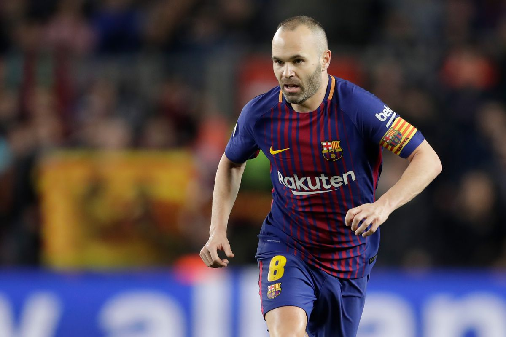

|  |
|---|
|
Andrés Iniesta Luján (Fuentealbilla, 1984. május 11. –) világbajnok és kétszeres Európa-bajnok spanyol válogatott, valamint négyszeres BL-győztes labdarúgó, 22 éven át az FC Barcelona, jelenleg pedig a japán Vissel Kóbe középpályása. Minden idők legtöbb trófeát elnyert spanyol labdarúgója. 1994-ben, 10 éves gyerekként a szülővárosához közeli, Albacete Balompié nevű, jelenleg a spanyol másodosztályban szereplő csapatban kezdett játszani. 1996-ban, 12 éves korában az FC Barcelona megfigyelői egy ifjúsági tornán figyeltek fel rá. Leigazolása után a Barcelona utánpótlás-akadémiáján, legendás La Masián nevelkedett. Családja otthon maradt, 500 km-re Barcelonától. Iniesta később felnőtt fejjel is "élete talán legnehezebb napjának" nevezte az elszakadást a családjától és a barátaitól. Annyira hiányoztak neki, hogy amikor a szülei kéthetente látogatóba érkeztek, nemcsak ugyanabban a szobában, de ugyanabban az ágyban is akart aludni, mint ők. A vele egykorú, jelentős sikereket később el nem érő Jorge Troiteirót leszámítva kamaszokkal volt tele az akadémia, közülük a későbbi játékostárs, Víctor Valdés vette a szárnyai alá a gyerekeket, akivel barátságuk ma is töretlen. 2000-ben, 16 évesen az FC Barcelona akkori szakvezetője, Lorenzo Serra Ferrer meghívta az első csapat edzéseire. Egy 2009-es interjúban így indokolta akkori döntését az edző: „Szellemileg már nagyon erős, kiegyensúlyozott volt. Akkor gondoltam, hogy némi tapasztalat a nagy játékosokkal nem bizonytalanítaná el, hogy jól hatna rá, ha olyan futballistákkal lehetne, akiket csodál, mint Pep." 2001-ben Spanyolország 16 éven aluli csapatát hozzásegítette az Európa-bajnoki címhez. 2002-ben már az U19-es spanyol válogatottal nyerte meg az Európa-bajnokságot. Ugyanebben az évben – még a Barcelona B csapatának alapembereként – Louis van Gaal kezei alatt bemutatkozhatott az FC Barcelona felnőtt csapatában a Club Brugge elleni Bajnokok Ligája találkozón. Ezt később (egy 2015-ben készült interjúban, már világ- és kétszeres európa bajnokként, többszörös BL győztesként) a pályafutása legfontosabb pillanatának tartotta. 2003-ban tagja volt az U20-as Világbajnokságon döntőbe jutott gárdának, a negyeddöntőben és az elődöntőben is továbbjutást érő gólt szerzett, 3 góljával a spanyol válogatott legeredményesebb játékosa volt. A 2003–04-es szezonban már tizenegyszer jutott szóhoz az FC Barcelonában, Frank Rijkaard vezetése alatt, javarészt Ronaldinho helyetteseként. |